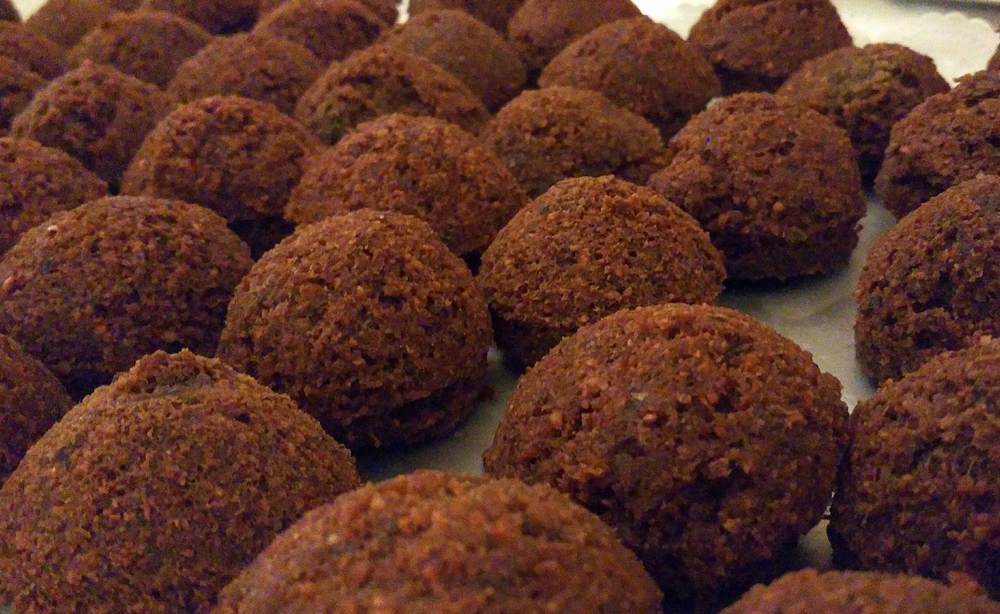

Egypt
Egypt, a country linking northeast Africa with the Middle East, dates to the time of the pharaohs.

Egypt, officially the Arab Republic of Egypt, is a country in the northeast corner of Africa, whose territory in the Sinai Peninsula extends beyond the continental boundary with Asia, as traditionally defined. Egypt is bordered by the Gaza Strip and Israel to the northeast, the Gulf of Aqaba and the Red Sea to the east, Sudan to the south, Libya to the west, and the Mediterranean Sea to the north. Across the Gulf of Aqaba lies Jordan, across the Red Sea lies Saudi Arabia, and across the Mediterranean lie Greece, Turkey and Cyprus, although none share a land border with Egypt.
Millennia-old monuments sit along the fertile Nile River Valley, including Giza's colossal Pyramids and Great Sphinx as well as Luxor's hieroglyph-lined Karnak Temple and Valley of the Kings tombs. The capital, Cairo, is home to Ottoman landmarks like Muhammad Ali Mosque and the Egyptian Museum, a trove of antiquities. Egyptian Arabic is the national spoken language. Other dialects and minority languages are spoken regionally.
Egyptian cuisine has ancient roots, with evidence that, for example, cheese has been made in Egypt since at least 3,000 BC. Falafel are small fried croquettes of bean or chickpea flour, eaten across the Levant and the West, but originating in Egypt; they are claimed as theirs by Coptic Christians. Ful medames, a stew of fava beans with oil and cumin, is popular in Egypt and has become widespread across the Arab world. Duqqa is a dip made of pounded herbs, hazelnuts and spices, eaten with bread. Kushari is a foreign-derived 19th century dish of rice, lentils and pasta, variously garnished; it began as food for the poor, but has become a national dish.
